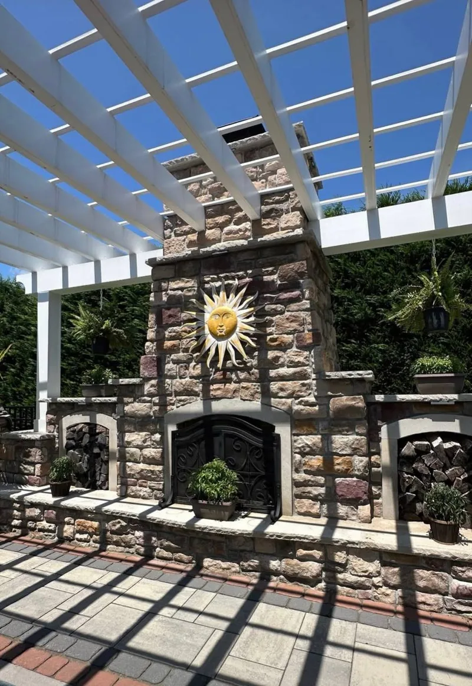
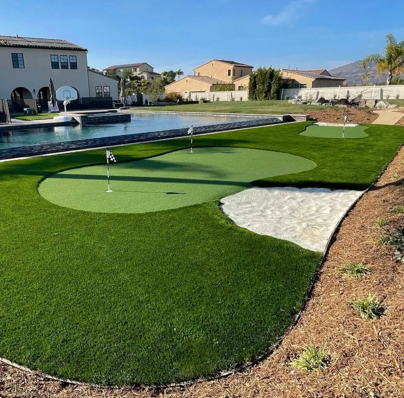
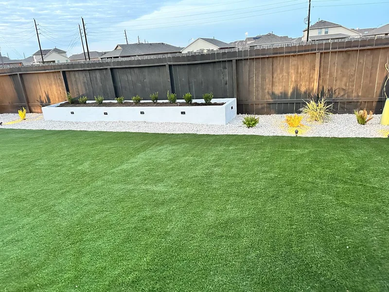

Your backyard. Elevated.
Premium hardscape & outdoor living built for Katy homeowners who expect more — patios, turf, stone, pergolas, and beyond.



Clean. Modern. Yours.
Complete backyard transformations in Katy TX.
From premium artificial turf and custom raised planters to landscape lighting that makes your yard shine at night — we handle the complete outdoor transformation. One crew, start to finish.
Every service. One contractor.
Patio Covers
Solid insulated patio covers and attached structures that protect your outdoor space year-round.
See cover work →Pergolas
Aluminum louvered pergolas, wood pergolas, and custom shade structures built to last.
See pergola work →Fire Features
Custom fire pits, bowls, and gas fire features that anchor your outdoor living space.
See fire work →Outdoor Kitchens
Custom grills, countertops, and full outdoor cooking spaces built for entertaining.
See kitchen work →Artificial Turf
Premium synthetic grass built for Texas heat — low maintenance, high-end curb appeal.
See turf work →Outdoor Living Spaces
Complete outdoor rooms — seating, shade, lighting, and hardscape brought together as one.
See living spaces →Custom Stonework
Stone fireplaces, fire pits, seating walls, columns, and veneer that last a lifetime.
See stonework →Driveways & Concrete
Stamped concrete, paver driveways, and decorative concrete with serious curb appeal.
See driveway work →Painting & More
Interior and exterior painting plus finishing services to complete your project top to bottom.
Get an estimate →Hardscape FAQ — Katy TX
We build patios, pergolas, artificial turf, custom putting greens, stone fireplaces, outdoor kitchens, driveways, and complete outdoor living spaces throughout Katy TX and Fort Bend County.
Yes — custom stone masonry including outdoor fireplaces, fire pits, seating walls, and full outdoor living rooms are among our signature services in Katy TX. Every piece is custom-built on site.
Every project is different. After a full on-site consultation and project analysis, we provide a detailed schedule tailored specifically to your build — scope, materials, and sequencing all factored in.
We serve all of Katy TX including Cinco Ranch, Firethorne, Falcon Landing, Cross Creek Ranch, Cane Island, Seven Meadows, Kelliwood, Nottingham Country, and communities along I-10 and the Grand Parkway.
Yes. We manage all permit coordination for projects in Katy and Fort Bend County as part of our full-service build. You don't need to deal with the city directly.
Your Katy backyard,
transformed.
Free on-site consultation. Detailed estimate with no obligation. We show up on time, build what we promise, and clean up when we're done.